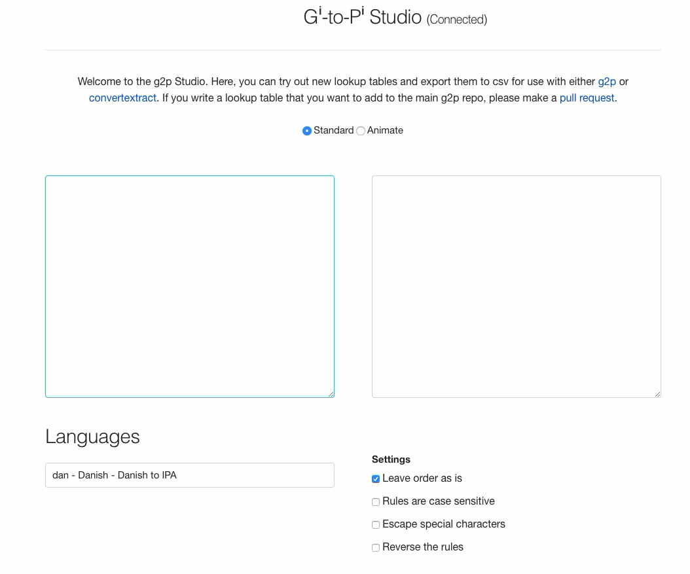
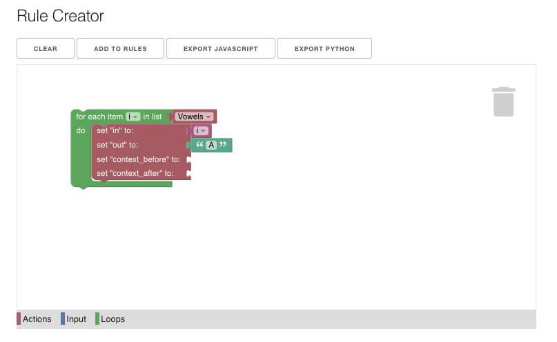

Studio¶
The g2p studio is intended to make the process of writing rules easier.
You can either visit the autobuilt version or spin it up on your machine
using the run_studio.py script in the root directory (python run_studio.py)
Basic use¶
The basic use of the g2p studio shows two text areas where the left one is input and the right one is output. If you type in the left text area, the rules of your chosen mapping will be applied and printed in the right text area.

Settings¶
There are four settings:
- Leave order as is
- This leaves the rules in the order you wrote them. Otherwise, they are reverse sorted by the length of their input.
- Rules are case sensitive
- Escape special characters
- This setting escapes special Regular Expression characters like slashes and dollar signs
- Reverse the rules
Custom rules¶
Rules are added by adding a row of data for each rule. For example, to make a rule that turns all instances of 'a' into 'b', you would put 'a' in the 'in' column and 'b' in the 'out' column. Context before and context after declares if there is any context required for the rule to apply. For example to turn 'a' into 'b' only when it is followed by 'c' you would put 'a' in the 'in' column, 'b', in the 'out' column and 'c' in the 'context_after' column.

Custom Abbreviations¶
Sometimes you might want to write more complicated rules like, turn 'a' into 'b' when it is followed by a vowel. Here you could put 'a|e|i|o|u' in the 'context_after' column of that rule, or you could simply declare an 'abbreviation' or variable.
To write an abbreviation, put the name of the abbreviation in the first column of the 'Custom Abbreviations' section, and every character that it abbreviates in the following columns. See below for the Vowels example. Now, we can write our rule with just 'Vowels' in the 'context_after' column.

Rule Creator¶
Instead of writing rules individually, we can use the 'Rule Creator' visual programming aid to write rules. You can fit the blocks together and then click 'add to rules' to add them to your rules. The example below demonstrates blocks that will add rules that turn each vowel in the Vowels abbreviation into 'A'
